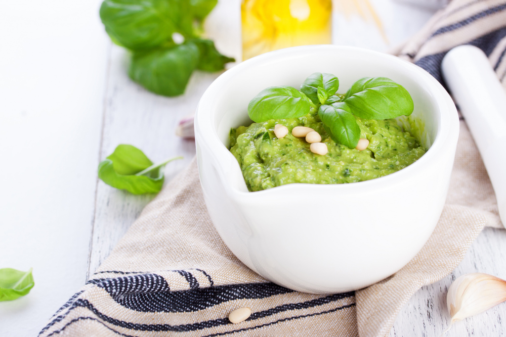

Pesto Alla Genovese (Basil Pesto)

Ingredients
- 2 cups (30g) basil
- 1/8 cup (15g) pine nuts
- 1 clove garlic
- 3 tbsp (45ml) olive oil
- 1/4 cup (25g) pecorino or parmesan cheese
- salt and pepper
Method
- Put all ingredients in a bowl apart from the salt and pepper.
- Blitz the ingredients into a smooth sauce using a hand-held blender (or use a food processor)
then season with a pinch of salt and pepper. Add more olive oil if necessary.
Home